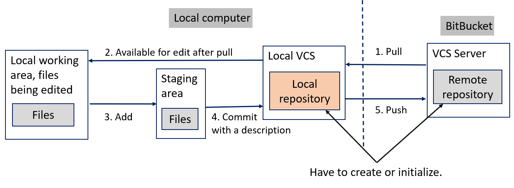

Fig. Distributed version control process and actions
Actions' descriptions
You get all the files from the remote repository
(database) to your local repository with a pull command.
All the files are available for you to edit. You don’t
need to move files ‘by hand’ from local repository to
a working area. This is done automatically when you edit
a file. Local Git keeps track what files are being edited
and what not >> the status of files.
Files that you want to update to the local and remote
repository you add to a staging area.
You create ‘a package’ of the updated files with a
description what have been done with a commit command
into the local repository.